Key Metrics
The Problem
Well-sensor telemetry (high-frequency, noisy, multi-well) and oil market signals (EIA spot prices, Baker Hughes rig counts) arrive at very different rates and formats. I wanted one place to ask questions like "did this pressure anomaly line up with a price move?" without joining CSV dumps by hand.
The plan: replay Volve-shaped field data as if it were live SCADA telemetry, pull market feeds on a schedule, route everything through one broker, and run windowed anomaly detection on the sensor stream. The well data in the repo is synthetic (generated with a fixed seed using Volve column names); a download script for the real Volve dataset is included.
Architecture
Producers → broker → ingestion/search/warehouse → stream + batch compute → observability

Approach & Implementation
- Broker topology: RabbitMQ definitions declare topic exchanges petroleum.sensors and petroleum.market plus a petroleum.dlq exchange, and eight durable queues with explicit TTLs, length caps and
reject-publishoverflow. - NiFi cluster: three NiFi 2.0 nodes coordinated by a ZooKeeper container. A REST script creates two process groups with consume / validate / attribute processors; routing to Elasticsearch and the warehouse is documented as the next flow to build.
- Stream anomaly detection: an Apache Beam (Python) job keys by well_id + sensor_type over 5-minute sliding windows (1-minute slide) and flags readings by z-score, IQR fences, rolling z-score and fixed sensor limits, with sinks for RabbitMQ and Elasticsearch. It is configured for the Flink runner.
- Market scrapers: an EIA Open Data API client (WTI / Brent daily spot, cached, rate-limited) and a Baker Hughes rig-count page parser, both publishing to petroleum.market.
- Storage and dashboards: the Beam job writes daily well-sensor-* and well-anomalies-* Elasticsearch indices; a partitioned Postgres schema and three Grafana dashboards are defined for the warehouse side.
- Compose stack: 16 services in docker-compose.yml (NiFi ×3, ZooKeeper, RabbitMQ, Elasticsearch, Kibana, Flink JobManager + 2 TaskManagers, BigQuery emulator, MinIO, Prometheus, Grafana, Postgres, Jenkins) plus 4 in the override file (replay simulator, two scrapers, Beam job). Terraform and Kubernetes start with a namespace and one NiFi Deployment.
Challenges & Solutions
Challenge: Bursty replay vs. slow consumers
A replay simulator that can publish faster than real time could flood downstream consumers.
Design: Bounded queues
Queues are capped (for example 1,000,000 messages / 24 h for sensor queues) with reject-publish overflow so a full queue refuses work instead of silently dropping old messages.
Challenge: Restarts and duplicate alerts
A streaming detector that restarts can re-emit anomalies it already reported.
Design: Checkpoints + deterministic IDs
flink-conf.yaml sets 60-second exactly-once checkpoints on incremental RocksDB, and the Elasticsearch sink uses a well + sensor + timestamp document ID so rewrites overwrite instead of duplicating.
Challenge: Heterogeneous source formats
Field CSVs, the EIA JSON API and Baker Hughes HTML pages each need different parsing.
Design: Parse at the producer
Each producer turns its source into JSON before publishing (the replay wraps a row as {timestamp, data}; scrapers emit price or rig-count records).
Outcome
What exists today is a well-specified scaffold: the Compose definitions with health checks and resource limits, a reproducible synthetic dataset (about 560,000 rows across six files) with a profiling report, the RabbitMQ topology, the Beam detector logic, and two scrapers.
Next steps:
- Close one path end to end (replay → RabbitMQ → Beam → anomalies queue), moving messages from the *.raw to the *.validated queues and sharing one envelope schema.
- Give the Beam job a RabbitMQ source the Flink runner supports, with publisher confirms on the producers.
- Export the NiFi flow to version control and add unit tests for the detector.